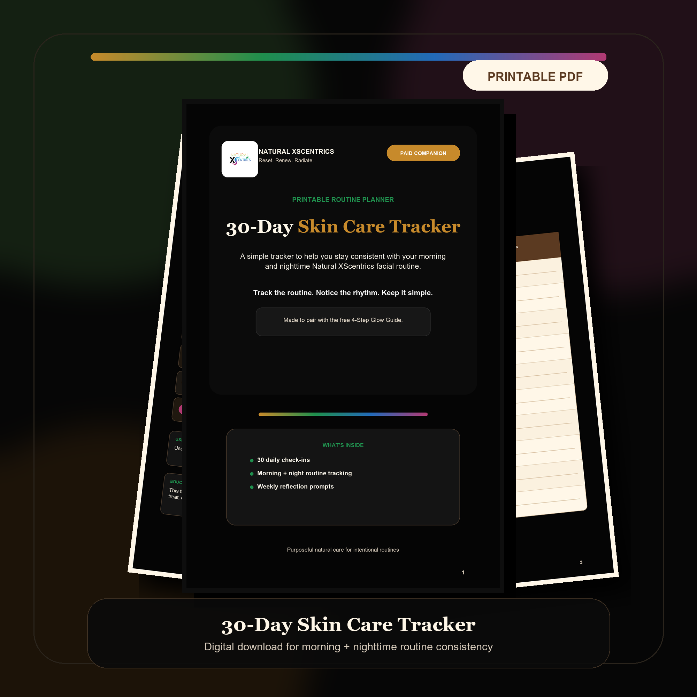

Guide
Guide
4-Step Glow Guide
FreeA simple walkthrough for using the four-step facial kit in the approved morning and nighttime order.
Get the free guideDigital products
Start with a free routine guide, then build consistency with a printable tracker that is available now, and return for founder-led education as the digital classroom grows.
Launch path
Guide
A simple walkthrough for using the four-step facial kit in the approved morning and nighttime order.
Get the free guide
PlannerA 7-page printable PDF tracker for daily check-ins, weekly reflection, and building a repeatable care routine.
Buy the trackerA founder-led class or replay focused on understanding ingredients and choosing routines with confidence.
Future digital offerRoutine support
Launch status
Free download
The 4-Step Glow Guide should be delivered by email so customers can save the routine, return to it, and naturally understand why the 30-Day Skin Care Tracker is the next step.
Email signup
Replace this preview with the live 4-Step Glow Guide Download signup form and connect it to the guide delivery automation.